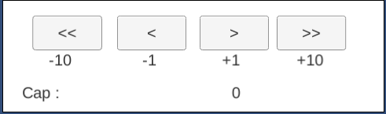
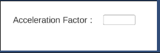
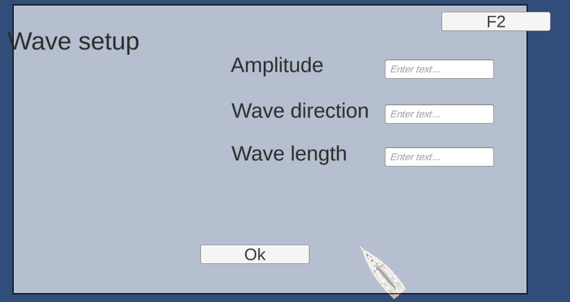

Premiers pas
Guide vers la scène de navigation
Une fois lancé, l’application vous amène dans son menu.
Appuyez sur le bouton “Continue Navigation”. (Le système de sauvegarde n’est pas encore correctement implémenté)
Vous voici maintenant capable de jouer avec l’application.
Touches utilisateur
TAB : action : change entre mode cap et mode allure (mais allure non fonctionnelle).
F1 : action :
- ouvre la fenêtre de configuration du vent.
- ferme la fenêtre de configuration du vent.
F2 : action :
- ouvre la fenêtre de configuration des vagues.
- ferme la fenêtre de configuration des vagues.
F3 : action :
- ouvre la fenêtre de configuration du courant.
- ferme la fenêtre de configuration du courant.
Inputs utilisateur
Boutons cap :
Emplacement : au milieu bas de l’écran
Action : change le cap (-10, -1, +1, +10)

Champ "Set factor of acceleration" :
Emplacement : en bas à gauche.
Action : après appuyer sur le bouton “ok”, change le facteur d’accélération par la valeur entrée dans le champ associé. (par défaut celui-ci est à 1)

Champ configuration environnement :
Action : après appuis sur le bouton “ok, change l’environnement par les valeurs entrée dans les champs associés. (sont à 0 par défaut)

Bandeau menu
Emplacement : en haut à gauche
Fonctionnalités : (toutes ne sont pas encore implémentées comme “Save navigation”)
- Navigation : Exit : permet de quitter l’application.
- Environnement : permet d’afficher les fenêtres de configuration associées.
- Help : Documentation, ouvre la page web de documentation utilisateur et développeur.